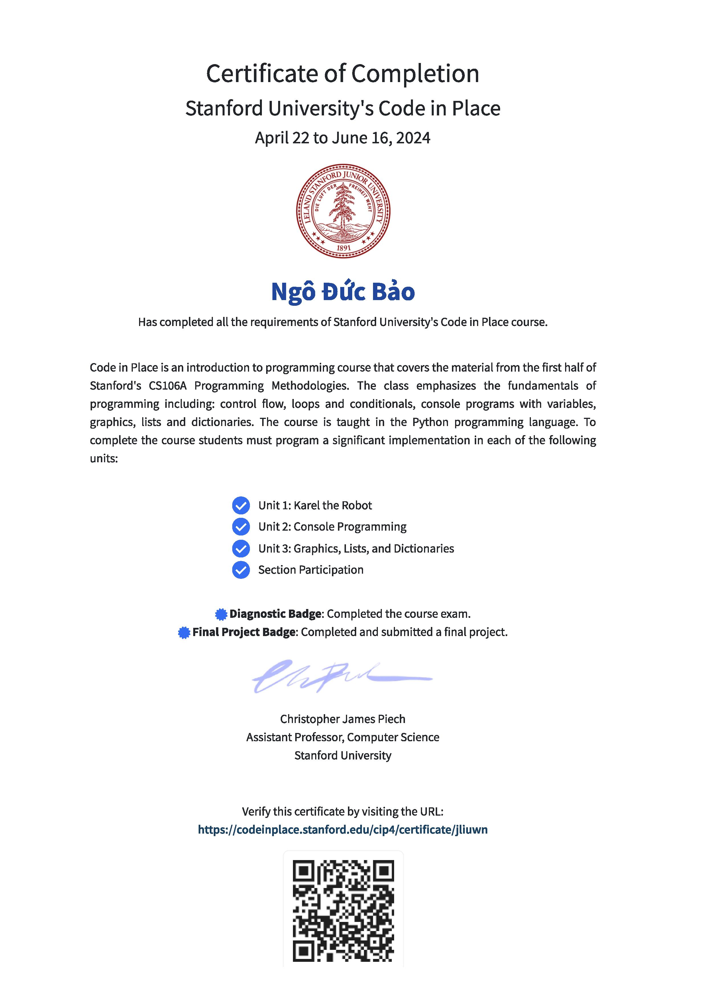

I am excited to get accepted to Stanford's Code in Place 2024.
There is a well explained Orientation. Chris and Mehan are super friendly. There is a built in Forum too.
Programming Karel is a lot of fun. Initially I thought Karel is a she, but Karel is actually a he, according to many of posts in the Forum.
Attending the first Section is a bit nerve-racking. I realized that I needed Zoom to be installed on my decades old iMac, that runs on Ubuntu!.
After some Googling, I got Zoom installed an an account registered. I think it works, including the camera, but sometimes my Section Leader and probably many of fellow students did not understand what I said. I'd like to think it's my old hardware (iMac) is incompatible with the new app (Zoom) than my heavy accent.
I still haven't been able to change the brackground on my video. Sorry for the mess.
There is a nice surprise that my Section Leader is currently in Vietnam, where I am from.
I was so releaved after resolving this challenge. I was a bit proud of myself too, I foolishly thought my solution is the only solution, or at least, it is one of the good solution. Turned out, it's not even close. There are so many different solutions.
* Note: Joseph, a head TA has just sent an invite to "🎉 Karel Workshop: Fill Karel and Midpoint Karel with Joseph 🎉".
I am so interested as the agenda includes:
As we getting an introduction to Python, it's excited to know the language has been used for space exploration!. Sky is the limit!
On the other hand, I would say we are all missing Karen, Mars Weight isn't that challenging.
My Section Leader posted Section 3 Bonus problem so here is my solution. It will keep asking for valid weight and name of planet. My Calculator even suggests correct names for misspelled ones.
The game is broken down to several milestones, quite easy to follow.
I am not sure how long would my code will be accessible on Code In Place server but here it is.
So far, Week 5 is the most exciting week. I have lots of fun with it. It started with Function 2.0, with parameters and return values, then countinued with graphics.
I made a random colored pyramid
And you are welcome to try my blowing bubbles
Angles in Canvas is quite weird, 0 degree is East, that's normal but 90 degrees ( or pi / 2) is South, which is weird. I did not miss a chance to share it with my CiP community here:weird angles.
Data is interesting. Combining Data with Graphics, I managed to make some interesting codes.
My Memory Game works quite well. I ran a test against Chris's own version and mine produces the same outputs but somehow the auto grader still hate my code. You can try it here.
Inspired by Hannah L with her Fibonacci quilts, and armed with new data structures, I used List to my own quilts with growing canvas Fibonacci patches
Building on the weird angles, and with newly acquire knowledge about data, I built My Clock. It took several iterations with a lot of contributions from the CiP community, especially from Bob and Minh N. Thanks to the CIP community.
Finally, I got my certificate from Stanford. There is a print button on the certificate but it doesn't work on Safari. So I had to use Chrome to print it to pdf. The result is a 2 pages document. In order to get it on a single A4 page, I had to reduce the scale to 85%. In comparision, CS50 allows user to select between A4 and Letter as well as downloading in pdf or png format.
I was hoping to see the Project Showcase with Final Projects by myself and my classmates. Unfortunately, there is no annoucement yet. People found a link to a webpage, which seems to be the Showcase but it's poorly designed.